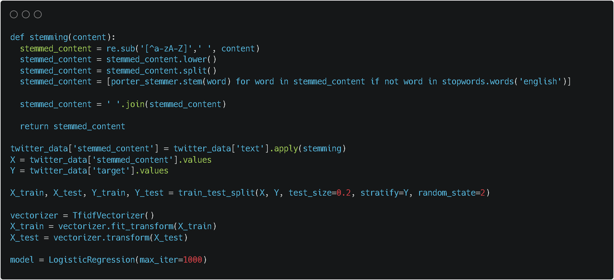
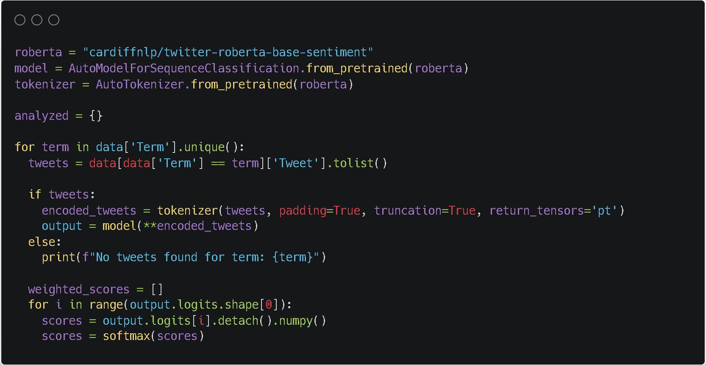

Working in order of challenge, I tackled building the NLP/ML framework for sentiment analysis first. I had two separate approaches for this – the first was to train and test my own ML algorithm based on Kaggle datasets, and the other was to use Meta/Google’s roBERTa model.

This first approach was especially arduous since I had to pre-process natural language text myself, which entailed cleaning sentences (stemming words, removing punctuation, etc) and creating tokens, converting tokens to a TF-IDF matrix, and then vectorizing. After running both training and testing data through a logistic regression algorithm, I found that while test predictions were ~80% accurate, predictions on a sample of 20 selected and labeled(+/-) current fashion-related tweets were only 70% accurate.

This second approach was ironically both much less work (just feeding roBERTa tokenized tweets) and much more accurate (95% accurate on sample data). The only drawback was less visibility and control over the algorithm, which didn't matter given the model's great performance.
Next, was automating data collection. Since scraping Twitter is prohibited by their ToS, I definitely did not create a scraper. However, if I was to create a scraper, this is what I would’ve done. I would’ve first tried to access the Twitter API directly through a developer account, only to find that Elon has recently put API tweet searching behind a paywall. Overcoming this obstacle would’ve entailed finding a Python scraper package on GitHub that could search terms and return tweets. I would’ve ran into problems with this scraper, like proxy instances getting blocked by Twitter and searches not iterating properly through my list of designers, but by adding randomized delays between searches and implementing exception handling, I would’ve been able to successfully scrape required data.
Finally, I opted for a simple bar graph visualization that ranks individual brand scores in a comparative context, with the #1 brand visually embellished appropriately.
A special thanks to developers @ Google, Meta and Hugging Face, as well as creators of Nitter, NumPy, SciPy, and pandas.